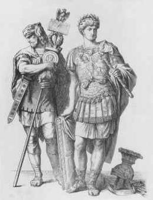

Just as a metaphor translates one experience
into another, so do media, like the telegraph, translate the sense ratios (micro level)
and fashion man's social life into new configurations (macro level).
The telegraph
translates the old system of courier messenger into the electronic world of instantaneous
speed. Because we become the tools we invent no less than the thoughts we think, the
person who sends a telegram is not the same person who dispatches a courier. He has been
metamorphosed by the medium on multiple levels. His day-to-day life may seem unaffected,
but his thought processes have undergone a sea-change. 'Those are pearls that were his
eyes.'
It was not until the advent of the
telegraph that messages could travel faster than a messenger. Before this, roads and the
written word were closely interrelated. It is only since the telegraph that information
has detached itself from such solid commodities as stone and papyrus, much as money had
earlier detached itself from hides, bullion, and metals, and has ended as paper. The term
"communication" has had an extensive use in connection with roads and bridges,
sea routes, rivers, and canals, even before it became transformed into "information
movement" in the electric age. Perhaps there is no more suitable way of defining the
character of the electric age than by first studying the rise of the idea of
transportation as communication, and then the transition of the idea from transport to
information by means of electricity. The word "metaphor" is from the Greek meta plus
pherein, to carry across or transport. In this book we are concerned with all forms
of transport of goods and information, both as metaphor and exchange. Each form of
transport not only carries, but translates and transforms, the sender, the receiver, and
the message. The use of any kind of medium or extension of man alters the patterns of
interdependence among people, as it alters the ratios among our senses.
Because man's extensions are inseparable from
his sensorium, media, or man's chest of tools, have evolved in the same way the species
has evolved, by the mechanism of natural selection.
Besides his gladius (sword) and pilus (spear) the Roman soldier
carried a spade. The Roman Legionary was a builder of roads. The Greek hoplite would have
considered such labor demeaning.
It is a
persistent theme of this book that all technologies are extensions of our physical and
nervous systems to increase power and speed. Again, unless there were such increases of
power and speed, new extensions of ourselves would not occur or would be discarded. For an
increase of power or speed in any kind of grouping of any components whatever is itself a
disruption that causes a change of organization. The alteration of social groupings, and
the formation of new communities, occur with the increased speed of information movement
by means of paper messages and road transport. Such speed-up means much more control at
much greater distances. Historically, it meant the formation of the Roman Empire and the
disruption of the previous city-states of the Greek world. Before the use of papyrus and
alphabet created the incentives for building fast, hard-surface roads, the walled town and
the city-state were natural forms that could endure.

Village and
city-state essentially are forms that include all human needs and functions. With greater
speed and, therefore, greater military control at a distance, the city-state collapsed.
Once inclusive and self-contained, its needs and functions were extended in the specialist
activities of an empire. Speed-up tends to separate functions, both commercial and
political,and acceleration beyond a point in any system becomes disruption and breakdown.
So when Arnold Toynbee turns, in A Study of History, to a massive documentation of
"the breakdowns of civilizations," he begins by saying: "One of the most
conspicuous marks of disintegration, as we have already noticed, is … when a
disintegrating civilisation purchases a reprieve by submitting to forcible political
unification in a universal state." Disintegration and reprieve, alike, are the
consequence of ever faster movement of information by couriers on excellent roads.
Speed-up
creates what some economists refer to as a center-margin
structure. When this becomes too extensive for the generating and control
center, pieces begin to detach themselves and to set up new center-margin systems of their
own. The most familiar example is the story of the American colonies of Great Britain.
When the thirteen colonies began to develop a considerable social and economic life of
their own, they felt the need to become centers themselves, with their own margins. This
is the time when the original center may make a more rigorous effort of centralized
control of the margins, as, indeed, Great Britain did. The slowness of sea travel proved
altogether inadequate to the maintenance of so extensive an empire on a mere center-margin
basis. Land powers can more easily attain a unified center-margin pattern than sea powers.
It is the relative slowness of sea travel that inspires sea powers to foster multiple
centers by a kind of seeding process. Sea powers thus tend to create centers without
margins, and land empires favor the center-margin structure. Electric speeds create centers everywhere. Margins
cease to exist on this planet.
Lack of
homogeneity in speed of information movement creates diversity of patterns in
organization. It is quite predictable, then, that any new means of moving information will
alter any power structure whatever. So long as the new means is everywhere available at
the same time, there is a possibility that the structure may be changed without breakdown.
Where there are great discrepancies in speeds of movement, as between air and road travel
or between telephone and typewriter, serious conflicts occur within organizations. The
metropolis of our time has become a test case for such discrepancies. If homogeneity of
speeds were total, there would be no rebellion and no breakdown. With print, political
unity via homogeneity became feasible for the first time. In ancient Rome, however, there
was only the light paper manuscript to pierce the opacity, or to reduce the discontinuity,
of the tribal villages; arid when the paper supplies failed, the roads were vacated, as
they were in our own age during gas-rationing. Thus the old city-state returned, and feudalism replaced
republicanism.
The phonetic alphabet and the Gutenberg press made possible the individual, a
man who was able to escape the web of tribal bonds, affiliation and primitive
superstition, and the priestly monopoly on knowledge, and achieve a solitary existence in
a visually organized world, i.e. a mechanical world deduced from verifiable cause and
effect relationships.
It seems
obvious enough that technical means of speed-up should wipe out the independence of
villages and city-states. Whenever speed-up has occurred, the new centralist power always
takes action to homogenize as many marginal areas as possible. The process that Rome
effected by the phonetic alphabet geared to its paper routes has been occurring in Russia
for the last century. Again, from the current example of Africa we can observe how very
much visual processing of the human psyche by alphabetic means will be needed before any
appreciable degree of homogenized social organization is possible. Much of this visual
processing was done in the ancient world by nonliterate technologies, as in Assyria. The
phonetic alphabet has no rival, however, as a translator of man out of the closed tribal
echo-chamber into the neutral visual world of lineal organization.
The linear and literal-minded utopian social
engineer represents the Promethean impulse to transcend human nature, without regard
for human limits. The blind adoption of new technologies recalls the self-deception of the
drug addict, who seeks immediate gratification at the expense of human wholeness.
Conversely, the reflective student of human nature understands the limits of the human
condition, and greets new technologies with caution and scepticism.
The
situation of Africa today is complicated by the new electronic technology. Western man is
himself being de-Westernized by his own new speed-up, as much as the Africans are being
detribalized by our old print and industrial technology. If we understood our own media
old and new, these confusions and disruptions could be programmed and synchronized. The
very success we enjoy in specializing and separating functions in order to have speed-up,
however, is at the same time the cause of inattention and unawareness of the situation. It
has ever been thus in the Western world at least. Self-consciousness of the causes and limits of
one's own culture seems to threaten the ego structure and is, therefore, avoided.
Nietzsche said understanding stops action, and men of action seem to have an intuition of
the fact in their shunning the dangers of comprehension.
A recent example of social engineering gone
wrong was the promotion of high-risk, politically correct mortgage loans to the poor,
spreading risk throughout the financial system by packaging the mortgages in derivatives
called collateralized debt obligations, poisoning the entire system with so much toxic
paper it caused a worldwide collapse.
The point of
the matter of speed-up by wheel, road, and paper is the extension of power in an ever more
homogeneous and uniform space. Thus the real potential of the Roman technology was not
realized until printing had given road and wheel a much greater speed than that of the
Roman vortex. Yet the speed-up of the electronic age is as disrupting for literate,
lineal, and Western man as the Roman paper routes were for tribal villagers. Our speed-up
today is not a slow explosion outward from center to margins but an instant implosion and
an interfusion of space and functions. Our
specialist and fragmented civilization of center-margin structure is suddenly experiencing
an instantaneous reassembling of all its mechanized bits into an organic whole.
This is the new world of the global village. The village, as Mumford explains in The
City in History, had achieved a social and institutional extension of all human
faculties. Speed-up and city aggregates only served to separate these from one another in
more specialist forms. The electronic age cannot sustain the very low gear of a
center-margin structure such as we associate with the past two thousand years of the
Western world. Nor is this a question of values. If we understood our older media, such as
roads and the written word, and if we valued their human effects sufficiently, we could
reduce or even eliminate the electronic factor from our lives. Is there an instance of any
culture that understood the technology that sustained its structure and was prepared to
keep it that way? If so, that would be an instance of values or reasoned preference. The values or
preferences that arise from the mere automatic operation of this or that technology in our
social lives are not capable of being perpetuated.
In the
chapter on the wheel it will be shown that transport without wheels had played a big role
before the wheel, some of which was by sledge, over both snow and bogs. Much of it was by
pack animal—woman being the first pack animal. Most wheel-less transport in the past,
however, was by river and by sea, a fact that is today as richly expressed as ever in the
location and form of the great cities of the world. Some writers have observed that man's
oldest beast of burden was woman, because the male had to be free to run interference for
the woman, as ball-carrier, as it were. But that phase belonged to the prewheel stage of
transport, when there was only the tractless waste of man the hunter and food-gatherer.
Today, when the greatest volume of transport consists in the moving of information, the
wheel and the road are undergoing recession and obsolescence; but in the first instance,
given the pressure for, and from, wheels, there had to be roads to accommodate them.
Settlements had created the impulse for exchange and for the increasing movement of raw
material and produce from countryside to processing centers, where there was division of
labor and specialist craft skills. Improvement of wheel and road more and more brought the
town to the country in a reciprocal spongelike action of give-and-take. It is a process we
have seen in this century with the motorcar. Great improvements in roads brought the city
more and more to the country. The road became a substitute for the country by the time
people began to talk about "taking a spin in the country." With superhighways
the road became a wall between man and the country. Then came the stage of the highway as
city, a city stretching continuously across the continent, dissolving all earlier cities
into the sprawling aggregates that
desolate their populations today.
With air
transport comes a further disruption of the old town-country complex that had occurred
with wheel and road. With the plane the cities began to have the same slender relation to
human needs that museums do. They became corridors of showcases echoing the departing
forms of industrial assembly lines. The road is, then, used less and less for travel, and
more and more for recreation. The traveler now turns to the airways, and thereby ceases to
experience the act of traveling. As people used to say that an ocean liner might as well
be a hotel in a big city, the jet traveler, whether he is over Tokyo or New York, might
just as well be in a cocktail lounge so far as travel experience is concerned. He will
begin to travel only after he lands.
Meantime,
the countryside, as oriented and fashioned by plane, by highway, and by electric
information-gathering, tends to become once more the nomadic trackless area that preceded
the wheel. The beatniks gather on the sands to meditate haiku.
The
principal factors in media impact on existing social forms are acceleration and
disruption. Today the acceleration tends to be total, and thus ends space as the main
factor in social arrangements. Toynbee sees the acceleration factor as translating the
physical into moral problems, pointing to the antique road crowded with dog carts, wagons,
and rickshaws as full of minor nuisance, but also minor dangers. Further, as the forces
impelling traffic mount in power, there is no more problem of hauling and carrying, but
the physical problem is translated into a psychological one as the annihilation of space
permits easy annihilation of travelers as well. This principle applies to all media study.
All means of interchange and of human interassociation tend to improve by acceleration.
Speed, in turn, accentuates problems of form and structure. The older arrangements had not
been made with a view to such speeds, and people begin to sense a draining-away of life
values as they try to make the old physical forms adjust to the new and speedier movement.
These problems, however, are not new. Julius Caesar's first act upon assuming power was to
restrict the night movement of wheeled vehicles in the city of Rome in order to permit
sleep. Improved transport in the Renaissance turned the medieval walled towns into slums.
Prior to the considerable diffusion of power through alphabet and papyrus, even the
attempts of kings to extend their rule in spatial terms were opposed at home by the
priestly bureaucracies. Their complex and unwieldy media of stone inscription made
wide-ranging empires appear very dangerous to such static monopolies. The struggles
between those who exercised power over the hearts of men and those who sought to control
the physical resources of nations were not of one time and place. In the Old Testament,
just this kind of struggle is reported in the Book of Samuel (I, viii) when the children
of Israel besought Samuel to give them a king. Samuel explained to them the nature of
kingly, as opposed to priestly, rule:
This will be the manner of the King that shall
reign over you: he will take your sons, and appoint them unto him for his chariots; and
they shall run before his chariots: and he will appoint them unto him for captains of
thousands, and captains of fifties; and he will set some to plough his ground, and to reap
his harvest, and to make his instruments of war, and the instruments of his chariots. And
he will take your daughters to be confectionaries, and to be cooks and to be bakers. And
he will take your fields, and your vineyards, and your oliveyards, even the best of them,
and give them to his servants.
The miracle of hard-surfaced Roman road building and civil engineering was not revived
in Europe until the 18th Century.
The paradoxical relationship between militarism and democratization noted by Toynbee.
Rousseau's 'mad priests'
Paradoxically,
the effect of the wheel and of paper in organizing new power structures was not to
decentralize but to centralize. A speed-up in communications always enables a central
authority to extend its operations to more distant margins. The introduction of alphabet
and papyrus meant that many more people had to be trained as scribes and administrators.
However, the resulting extension of homogenization and of uniform training did not come
into play in the ancient or medieval world to any great degree. It was not really until
the mechanization of writing in the Renaissance that intensely unified and centralized
power was possible. Since this process is still occurring, it should be easy for us to see
that it was in the armies of Egypt and Rome that a kind of democratization by uniform
technological education occurred. Careers were then open to talents for those with
literate training. In the chapter on the written word we saw how phonetic writing
translated tribal man into a visual world and invited him to undertake the visual organization of space. The priestly
groups in the temples had been more concerned with the records of the past and with the
control of the inner space of the unseen
than with outward military conquest. Hence, there was a clash between the priestly
monopolizers of knowledge and those who wished to apply it abroad as new conquest and
power. (This same clash now recurs between the university and the business world.) It was
this kind of rivalry that inspired Ptolemy II to establish the great library at Alexandria
as a center of imperial power. The huge staff of civil servants and scribes assigned to
many specialist tasks was an antithetic and countervailing force to the Egyptian
priesthood. The library could serve the political organization of empire in a way that did
not interest the priesthood at all. A not-dissimilar rivalry is developing today between
the atomic scientists and those who are mainly concerned with power.
If we
realize that the city as center was in the first instance an aggregate of threatened
villagers, it is then easier for us to grasp how such harassed companies of refugees might
fan out into an empire. The city-state as a form was not a response to peaceful commercial
development, but a huddling for security amidst anarchy and dissolution. Thus the Greek
city-state was a tribal form of inclusive and integral community, quite unlike the
specialist cities that grew up as extensions of Roman military expansion. The Greek
city-states eventually disintegrated by the usual action of specialist trading and the
separation of functions that Mumford portrays in The City in History. The Roman
cities began that way—as specialist operations of the central power. The Greek cities
ended that way.
If a city
undertakes rural trade, it sets up at once a center-margin relation with the rural area in
question. That relation involves taking staples and raw produce from the country in
exchange for specialist products of the craftsman. If, on the other hand, the same city
attempts to engage in overseas trade, it is more natural to "seed" another city
center, as the Greeks did, rather than to deal with the overseas area as a specialized
margin or raw material supply.
A brief
review of the structural changes in the organization of space as they resulted from wheel,
road, and papyrus could go as follows: There was first the village, which lacked all of
these group extensions of the private physical body. The village, however, was already a
form of community different from that of food-gathering hunters and fishers, for villagers
may be sedentary and may begin a division of labor and functions. Their being congregated
is, itself, a form of acceleration of human activities which provides momentum for further
separation and specialization of action. Such are the conditions for the extension of
feet-as-wheel to speed production and exchange. These are, also, the conditions that
intensify communal conflicts and ruptures that send men huddling into ever larger
aggregates, in order to resist the accelerated activities of other communities. The
villages are swept up into the city-state by way of resistance and for the purpose of
security and protection.
The Arts and Crafts Movement of 19th century was an attempt to restore simplicity,
human scale and the organic.
The village
had institutionalized all human functions in forms of low intensity. In this mild form
everyone could play many roles. Participation was high, and organization was low. This is
the formula for stability in any type of organization. Nevertheless, the enlargement of
village forms in the city-state called for greater intensity and the inevitable separation
of functions to cope with this intensity and competition. The villagers had all
participated in the seasonal rituals that in the city became the specialized Greek drama.
Mumford feels that "The village measure prevailed in the development of the Greek
cities, down to the fourth century …" (The City in History). It is this extension and translation of the human
organs into the village model without loss of corporal unity that Mumford uses as a
criterion of excellence for city forms in any time or locale. This biological
approach to the man-made environment is sought today once more in the electric age. How
strange that the idea of the "human scale" should have seemed quite without
appeal during the mechanical centuries.
"The first thing we do, let's kill all the lawyers." Henry VI
Competitive behavior is discouraged in most tribal societies,
where altruism and self-sacrifice solidify the bonds of kinship and preserve social
harmony.
Cannon were the counter-irritant to the walled city, and glacis
were the counter-irritant to cannon.
The natural
tendency of the enlarged community of the city is to increase the intensity and accelerate
functions of every sort, whether of speech, or crafts, or currency and exchange. This, in
turn, implies an inevitable extension of these actions by subdivision or, what is the same
thing, new invention. So that even though the city was formed as a kind of protective hide
or shield for man, this protective layer was purchased at the cost of maximized struggle
within the walls. War games such as those described by Herodotus began as ritual blood
baths between the citizenry. Rostrum, law
courts, and marketplace all acquired the intense image of divisive competition that is
nowadays called "the rat race." Nevertheless, it was amidst such
irritations that man produced his greatest inventions as counter-irritants. These
inventions were extensions of himself by means of concentrated toil, by which he hoped to
neutralize distress. The Greek word ponos, or "toil," was a term used by
Hippocrates, the father of medicine, to describe the fight of the body in disease. Today
this idea is called homeostasis, or
equilibrium as a strategy of the staying power of any body. All organizations, but
especially biological ones, struggle to remain constant in their inner condition amidst
the variations of outer shock and change. The man-made social environment as an extension
of man's physical body is no exception. The city, as a form, of the body politic, responds
to new pressures and irritations by resourceful new extensions—always in the effort
to exert staying power, constancy, equilibrium, and homeostasis.
Man's extensions have the power to impose a
sense of normality and inevitability on all but the historian, who views the arc of their
development. The adopters do not realize that they are stages in a dynamic process of
irritation and counter-irritation.
The city,
having been formed for protection, unexpectedly generated fierce intensities and new
hybrid energies from accelerated interplay of functions and knowledge. It burst forth into
aggression. The alarm of the village, followed by the resistance of the city, expanded
into the exhaustion and inertia of empire. These three stages of the disease and
irritation syndrome were felt, by those living through them, as normal physical
expressions of counter-irritant recovery from disease.
Even more revolutionary was the advent of the personal computer and the Internet.
The third
stage of struggle for equilibrium among the forces within the city took the form of
empire, or a universal state, that generated the extension of human senses in wheel, road,
and alphabet. We can sympathize with those who first saw in these tools a providential
means of bringing order to distant areas of turbulence and anarchy. These tools would have
seemed a glorious form of "foreign aid," extending the blessings of the center
to the barbarian margins. At this moment, for example, we are quite in the dark about the
political implications of Telstar. By
outering these satellites as extensions of our nervous system, there is an automatic
response in all the organs of the body politic of mankind. Such new intensity of
proximity imposed by Telstar calls for radical rearrangement of all organs in order to
maintain staying power and equilibrium. The teaching and learning process for every child
will be affected sooner rather than later. The time factor in every decision of business
and finance will acquire new patterns. Among the peoples of the world strange new vortices of power will appear
unexpectedly.
Tribal people experience the world discontinuously in resonant space. When a tribal
person views a movie and someone walks out of the frame, the tribal mind does not assume
that this person is nearby in contiguous space, but that he has been magically transported
to a separate space-time.
The
full-blown city coincides with the development of writing—especially of phonetic
writing, the specialist form of writing that makes a division between sight and sound. It
was with this instrument that Rome was able to reduce the tribal areas to some visual
order. The effects of phonetic literacy do not depend upon persuasion or cajolery for
their acceptance. This technology for translating the resonating tribal world into Euclidean lineality and visuality is
automatic. Roman roads and Roman streets were uniform and repeatable wherever they
occurred. There was no adaptation to the contours of local hill or custom. With the
decline of papyrus supplies, the wheeled traffic stopped on these roads, too. Deprivation
of papyrus, resulting from the Roman loss of Egypt, meant the decline of bureaucracy, and
of army organization as well. Thus the medieval world grew up without uniform roads or
cities or bureaucracies, and it fought the wheel, as later city forms fought the railways;
and as we, today, fight the automobile. For new speed and power are never compatible with
existing spatial and social arrangements.
Writing
about the new straight avenues of the seventeenth-century cities, Mumford points to a
factor that was also present in the Roman city with its wheeled traffic; namely, the need
for broad straight avenues to speed military movements, and to express the pomp and
circumstance of power. In the Roman world the army was the work force of a mechanized
wealth-creating process. By means of soldiers as uniform and replaceable parts, the Roman
military machine made and delivered the goods, very much in the manner of industry during
the early phases of the industrial revolution. Trade followed the legions. More than that,
the legions were the industrial machine, itself; and numerous new cities were like new
factories manned by uniformly trained army personnel. With the spread of literacy after
printing, the bond between the uniformed soldier and the wealth-making factory hand became
less visible. It was obvious enough in Napoleon's armies. Napoleon, with his
citizen-armies, was the industrial revolution itself, as it reached areas long protected
from it.
Paracite [Latin parasitus, a person who lives by amusing the
rich, from Greek, parasitos, person who eats at someone else's table, parasite: para-,
beside + sitos, grain, food]
The Roman
army as a mobile, industrial wealth-making force created in addition a vast consumer
public in the Roman towns. Division of labor always creates a separation between producer
and consumer, even as it tends to separate the place of work and the living space. Before
Roman literate bureaucracy, nothing comparable to the Roman consumer specialists had been
seen in the world. This fact was institutionalized in the individual known as
"parasite," and in the social institution of the gladiatorial games. (Panem
et circenses.) The private sponge and the collective sponge, both reaching out for
their rations of sensation, achieved a horrible distinctness and clarity that matched the
raw power of the predatory army machine.
The idea that papyrus was the technological sine qua non for the administration
of the Roman empire was first advanced by Harold Innis in The Bias of Communication
With the
cutting-off of the supplies of papyrus by the Mohammedans, the Mediterranean, long a Roman
lake, became a Muslim lake, and the Roman center collapsed. What had been the margins of
this center-margin structure became independent centers on a new feudal, structural base.
The Roman center collapsed by the fifth century a.d. as wheel, road, and paper dwindled
into a ghostly paradigm of former power.
Papyrus
never returned. Byzantium, like the medieval centers, relied heavily on parchment, but
this was too expensive and scarce a material to speed commerce or even education. It was
paper from China, gradually making its way through the Near East to Europe, that
accelerated education and commerce steadily from the eleventh century, and provided the
basis for "the Renaissance of the twelfth century," popularizing prints and,
finally, making printing possible by the fifteenth century.
"Any study in depth is a study in breadth."
With the
moving of information in printed form, the wheel and the road came into play again after
having been in abeyance for a thousand years. In England, pressure from the press brought
about hard-surface roads in the eighteenth century, with all the population and industrial
rearrangement that entailed. Print, or mechanized writing, introduced a separation and
extension of human functions unimaginable even in Roman times. It was only natural,
therefore, that greatly increased wheel speeds, both on road and in factory, should be
related to the alphabet that had once done a similar job of speed-up and specialization in
the ancient world. Speed, at least in its lower reaches of the mechanical order, always
operates to separate, to extend, and to amplify functions of the body. Even specialist learning in higher education proceeds by
ignoring interrelationships; for such complex awareness slows down the achieving of
expertness.
The post
roads of England were, for the most part, paid for by the newspapers. The rapid increase
of traffic brought in the railway, that accommodated a more specialized form of wheel than
the road. The story of modern America that began with the discovery of the white man by
the Indians, as a wag has truly said, quickly passed from exploration by canoe to
development by railway. For three centuries Europe invested in America for its fish and
its furs. The fishing schooner and the canoe preceded the road and the postal route as
marks of our North American spatial organization. The European investors in the fur trade
naturally did not want the trapping lines overrun by Tom Sawyers and Huck Finns. They
fought land surveyors and settlers, like Washington and Jefferson, who simply would not
think in terms of mink. Thus the War of Independence was deeply involved in media and
staple rivalries. Any new medium, by its acceleration, disrupts the lives and investments
of whole communities. It was the railway that raised the art of war to unheard-of
intensity, making the American Civil War the first major conflict fought by rail, and
causing it to be studied and admired by all European general staffs, who had not yet had
an opportunity to use railways for a general blood-letting.
Despite Roosevelt's New Deal, the United States
didn't begin to recover from the crash of 1929 until the Second World War, ten years
later.
War is never
anything less than accelerated technological change. It begins when some notable
disequilibrium among existing structures has been brought about by inequality of rates of
growth. The very late industrialization and unification of Germany had left her out of the
race for staples and colonies for many years. As the Napoleonic wars were technologically
a sort of catching-up of France with England, the First World War was itself a major phase
of the final industrialization of Germany and America. As Rome had not shown before, and
Russia has shown today, militarism is itself the main route of technological education and
acceleration for lagging areas.
Almost
unanimous enthusiasm for improved routes of land transportation followed the War of 1812.
Furthermore, the British blockade of the Atlantic coast had compelled an unprecedented
amount of land carriage, thus emphasizing the unsatisfactory character of the highways.
War is certainly a form of emphasis that delivers many a telling touch to lagging social
attention. However, in the very Hot Peace since the Second War, it is the highways of the
mind that have been found inadequate. Many have felt dissatisfaction with our educational
methods since Sputnik, in exactly the same spirit that many complained about the highways
during the War of 1812.
The authority of knowledge is supplanting top-down management, flattening the
corporate organization chart, and replacing the traditional business paradigm. The new
masters are engineers working in skunkworks and R&D labs.
Now that man
has extended his central nervous system by electric technology, the field of battle has
shifted to mental image-making-and-breaking, both in war and in business. Until the
electric age, higher education had been a privilege and a luxury for the leisured classes;
today it has become a necessity for production and survival. Now, when information itself
is the main traffic, the need for advanced knowledge presses on the spirits of the most
routine-ridden minds. So sudden an upsurge of academic training into the marketplace has
in it the quality of classical peripety or reversal, and the result has been a wild guffaw
from the gallery and the campus. The hilarity, however, will die down as the Executive
Suites are taken over by the Ph.D.s.
Bergson said to speed up an interval of time in the universe would be to impoverish the
thought it contains.
For an
insight into the ways in which the acceleration of wheel and road and paper rescramble
population and settlement patterns, let us glance at some instances provided by Oscar
Handlin in his study Boston's Immigrants. In 1790, he tells us, Boston was a
compact unit with all workers and traders living in sight of each other, so that there was
no tendency to section residential areas on a class basis: "But as the town grew, as
the outlying districts became more accessible, the people spread out and at the same time
were localized in distinctive areas." That one sentence capsulates the theme of this
chapter. The sentence can be generalized to include the art of writing: "As knowledge
was spread out visually and as it became more accessible in alphabetic form, it was
localized and divided into specialties." Up to the point just short of
electrification, increase of speed produces division of function, and of social classes,
and of knowledge.
At electric
speed, however, all that is reversed. Implosion and contraction then replace mechanical
explosion and expansion. If the Handlin formula is extended to power, it becomes: "As
power grew, and as outlying areas became accessible to power, it was localized in
distinctive delegated jobs and functions.", This formula is a principle of
acceleration at all levels of human organization. It concerns especially those extensions
of our physical bodies that appear in wheel and road and paper messages. Now that we have
extended not just our physical organs but the nervous system, itself, in electric
technology, the principle of specialism and division as a factor of speed no longer
applies. When information moves at the speed of signals in the central nervous system, man
is confronted with the obsolescence of all earlier forms of acceleration, such as road and
rail. What emerges is a total field of
inclusive awareness. The old patterns of psychic and social adjustment become
irrelevant.
Until the
1820s, Handlin tells us, Bostonians walked to and fro, or used private conveyances.
Horse-drawn buses were introduced in 1826, and these speeded up and extended business a
great deal. Meantime the speed-up of industry in England had extended business into the
rural areas, dislodging many from the land and increasing the rate of immigration. Sea
transport of immigrants became lucrative and encouraged a great speed-up of ocean
transport. Then the Cunard Line was subsidized by the British government in order to
ensure swift contact with the colonies. The railways soon linked into this Cunard service,
to convey mail and immigrants inland.
Although
America developed a massive service of inland canals and river steamboats, they were not
geared to the speeding wheels of the new industrial production. The railroad was needed to
cope with mechanized production, as much as to span the great distances of the continent.
The steam railroad as an accelerator proved to be one of the most revolutionary of all
extensions of our physical bodies, creating a new political centralism and a new kind of
urban shape and size. It is to the railroad that the American city owes its abstract grid
layout, and the nonorganic separation of production, consumption, and residence. It is the
motorcar that scrambled the abstract shape of the industrial town, mixing up its separated
functions to a degree that has frustrated and baffled both planner and citizen. It
remained for the airplane to complete the confusion by amplifying the mobility of the
citizen to the point where urban space as such was irrelevant. Metropolitan space is
equally irrelevant for the telephone, the telegraph, the radio, and television. What the
town planners call "the human scale" in discussing ideal urban spaces is equally
unrelated to these electric forms. Our electric extensions of ourselves simply by-pass
space and time, and create problems of human involvement and organization for which there
is no precedent. We may yet yearn for the simple days of the automobile and the
superhighway.